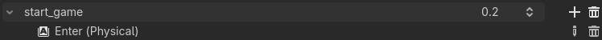
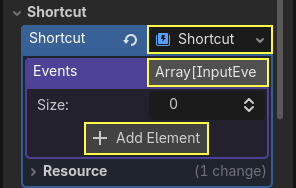
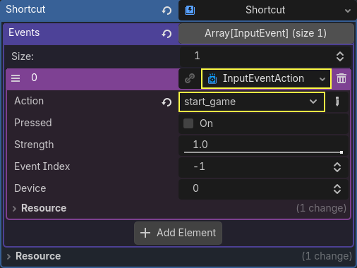

Hoàn thiện
Chúng ta đã hoàn thành toàn bộ chức năng của game. Dưới đây là một số bước còn lại để thêm chút "gia vị" nhằm cải thiện trải nghiệm chơi.
Bạn cứ thoải mái mở rộng lối chơi bằng ý tưởng của riêng mình.
Hình nền
Nền xám mặc định không hấp dẫn lắm, vì vậy hãy đổi màu của nó. Một cách để làm điều này là dùng node ColorRect. Đặt nó làm node đầu tiên bên dưới Main để nó được vẽ phía sau các node khác. ColorRect chỉ có một thuộc tính: Color. Chọn một màu bạn thích và chọn "Layout" -> "Anchors Preset" -> "Full Rect" trên thanh công cụ phía trên viewport hoặc trong Inspector để nó phủ kín màn hình.
Bạn cũng có thể thêm hình nền, nếu có, bằng cách dùng node TextureRect thay thế.
Hiệu ứng âm thanh
Âm thanh và âm nhạc có thể là cách hiệu quả nhất để tăng sức hấp dẫn cho trải nghiệm chơi. Trong thư mục art của game, bạn có hai file âm thanh: "House In a Forest Loop.ogg" cho nhạc nền và "gameover.wav" cho lúc người chơi thua.
Thêm hai node AudioStreamPlayer làm node con của Main. Đặt tên một node là Music và node còn lại là DeathSound. Trên mỗi node, nhấn vào thuộc tính Stream, chọn "Load" và chọn file âm thanh tương ứng.
Mọi âm thanh được tự động import với cài đặt Loop bị tắt. Nếu bạn muốn nhạc lặp liền mạch, hãy nhấn vào mũi tên của file Stream, chọn Make Unique, sau đó nhấn vào file Stream và đánh dấu ô Loop.

Để phát nhạc, thêm $Music.play() vào hàm new_game() và $Music.stop() vào hàm game_over().
Cuối cùng, thêm $DeathSound.play() vào hàm game_over().
func game_over():
...
$Music.stop()
$DeathSound.play()
func new_game():
...
$Music.play()
public void GameOver()
{
...
GetNode<AudioStreamPlayer>("Music").Stop();
GetNode<AudioStreamPlayer>("DeathSound").Play();
}
public void NewGame()
{
...
GetNode<AudioStreamPlayer>("Music").Play();
}
Phím tắt
Vì game được điều khiển bằng bàn phím, sẽ tiện hơn nếu ta cũng có thể bắt đầu game bằng cách nhấn một phím. Chúng ta có thể làm điều này với thuộc tính "Shortcut" của node Button.
Trong một bài trước, chúng ta đã tạo bốn input action để di chuyển nhân vật. Giờ ta sẽ tạo một input action tương tự để gán cho nút start.
Chọn "Project" -> "Project Settings" rồi nhấn vào tab "Input Map". Giống như cách bạn đã tạo các input action di chuyển, hãy tạo một input action mới tên là start_game và thêm ánh xạ phím cho phím Enter.

Đây là thời điểm tốt để thêm hỗ trợ tay cầm nếu bạn có sẵn. Hãy cắm hoặc ghép nối tay cầm, sau đó với mỗi input action mà bạn muốn hỗ trợ tay cầm, nhấn nút "+" và nhấn nút bấm, d-pad hoặc hướng cần analog tương ứng mà bạn muốn gán cho input action đó.
Trong scene HUD, chọn StartButton và tìm thuộc tính Shortcut của nó trong Inspector. Tạo một resource Shortcut mới bằng cách nhấn vào bên trong ô, mở mảng Events và thêm một phần tử mảng mới bằng cách nhấn vào Array[InputEvent] (size 0).

Tạo một InputEventAction mới và chọn action start_game.

Giờ khi nút bắt đầu xuất hiện, bạn có thể nhấp vào nó hoặc nhấn Enter để bắt đầu game.
Vậy là bạn đã hoàn thành game 2D đầu tiên trong Godot.

Bạn đã tạo được nhân vật do người chơi điều khiển, kẻ địch xuất hiện ngẫu nhiên quanh bàn chơi, đếm điểm, xử lý game over và chơi lại, giao diện người dùng, âm thanh, và nhiều thứ khác. Xin chúc mừng!
Vẫn còn nhiều điều để học, nhưng bạn có thể dành chút thời gian tận hưởng những gì mình đã đạt được.
Và khi đã sẵn sàng, bạn có thể chuyển sang Game 3D đầu tiên của bạn để học cách tạo một game 3D hoàn chỉnh từ đầu trong Godot.